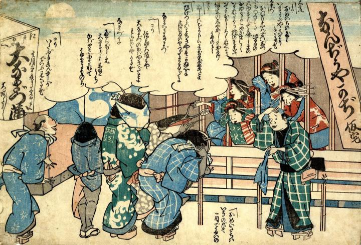

← 图鉴索引

仮託の前で遊女を物色する鯰たち。手ぬぐいで顔を隠している。
出典：親書誌：U426_nichibunken_0243：なんぢうやかぢ仮宅；ナンジュウヤカジカタク／日付：2011／資源識別子：U426_nichibunken_0243_0001_0000
Copyright (c)2010- International Research Center for Japanese Studies, Kyoto, Japan. All rights reserved.